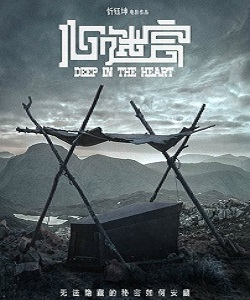

代表人物和代表作品 中国香港 周星驰 《大话西游》 印度 阿米尔汗 《三傻大闹宝莱坞》 美国 克里斯哥伦布 《小鬼当家》
《大话西游》由《月光宝盒》和《大圣娶亲》两部组成，讲述了一个跨越时空的爱情故事。《三傻大闹宝莱坞》是小说《五点人》改编而成的影片采用插叙的手法，讲述了三位主人公法罕、拉加与兰彻间的大学故事。《小鬼当家》由克里斯·哥伦布导演，童星麦考利·卡尔金主演的家庭喜剧。由1990年至2012年共分五部上映。
代表人物和代表作品 日本 岩井俊二 《情书》 法国 吕克贝松 《这个杀手不太冷》 美国 罗伯莱纳 《怦然心动》
《情书》改编自同名小说《情书》，讲述了一封原本出于哀思而寄往天国的情书，却大出意料收到同名同姓的回信，并且逐渐挖掘出一段深埋多年却始终沉静的纯真单恋的爱情故事。 《这个杀手不太冷》由让·雷诺、盖瑞·欧德曼及娜塔丽·波特曼主演，讲述了一名职业杀手与一个小女孩的故事。 《怦然心动》是由罗伯·莱纳执导根据文德琳·范·德拉安南的同名原著小说改编，描述了青春期中男孩女孩之间的有趣战争。
主要人物和代表作品 美国 马丁斯科赛斯 《禁闭岛》 中国 忻钰坤 《心迷宫》 日本 中岛哲也 《告白》
《禁闭岛》由莱昂纳多·迪卡普里奥主演。影片讲述了联邦侦探泰德·丹尼尔受命到一座岛上调查一个杀人机构，却因此遇到了重重危险和谜团的故事。 《心迷宫》讲述了中国某偏远村庄里，因为一具莫名出现的尸体而引发的一连串离奇怪事的故事。该片于2015年10月16日在中国上映。《告白》根据小说《告白》改编而成。讲述了某一天森口悠子发现其爱女被杀害在学校的游泳池中。尽管该起事件被断定为意外死亡，但森口却向学生们宣告犯人就在班中，并展开了自己的复仇。

主要人物和代表作品 美国 詹姆斯卡梅隆 《阿凡达》 英国 阿方索卡隆 《人类之子》
《阿凡达》该片人类穿上阿凡达的躯壳，飞到遥远的星球潘多拉开采资源。受伤后以轮椅代步的前海军杰克，自愿接受实验并以他的阿凡达来到潘多拉。然而，在结识了当地纳美族人公主涅提妮之后，杰克在一场人类与潘多拉军民的战争中陷入两难。《人类之子》改编自“推理小说第一夫人”P·D·詹姆斯的同名推理小说，讲述的是人类灭亡前的英雄救世之战的故事，2006年9月22日在英国上映。
鼠标左键单击下表格进行采集注册
看电影人士信息采集注册表想要更多的了解站长点以下链接
有关我的个人简历